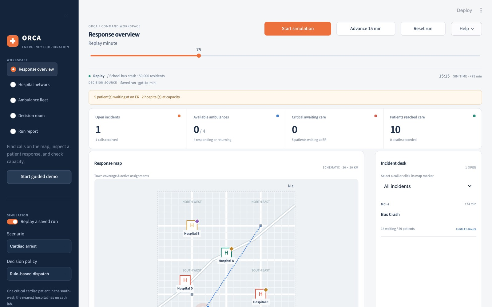

Introduce the project in one sentence: a simulated town where AI agents coordinate ambulances and hospitals during emergencies. The question is not whether agents can talk, but whether their talking improves outcomes compared with fixed rules. Everything is on the public GitHub repo, including every model answer, so the results can be checked.
The problem
The nearest ER is not always the right ER
Ambulances usually go to the nearest emergency department, even when it is full.
A full ER causes offload delay: the crew waits with the patient and the ambulance is out of service.
In a mass-casualty incident the nearest hospital floods while others still have beds.
Shared status boards are self-reported, refresh every 15 minutes or so, and cannot negotiate.
Research question
When does negotiation between AI agents improve emergency coordination, and when are rules enough?
H1 Negotiation reduces conflicts and capacity failures.
H2 Negotiation gets critical patients to care faster under scarcity.
H3 The benefit is larger in a surge and with incomplete information.
ORCA-EMS02
Explain offload delay: a crew cannot leave until the ER takes the patient, so a crowded ER also removes ambulances from service. In a mass-casualty event the nearest hospital gets overwhelmed while others have space. Real status boards show information but cannot negotiate. That gap is what the agents try to fill, and these three hypotheses are what I tested.
Simulated environment
A fictional town of 50,000, sized from U.S. per-capita ratios
4
hospitals: Level-1 and Level-2 trauma centers, a community hospital, a private hospital with a surge contract
22
ER beds, 114 ward beds; admitted patients board in the ER when wards are full
4 + 2
city ambulances plus 2 private units through mutual aid
2
trauma surgical teams; nurses with coverage limits who can be lent between hospitals
First responders: police secure violent scenes before ambulances enter; fire crews extricate trapped victims.
Patients: severity, needs, and a synthetic survival curve that decays with time to care.
Engine: deterministic 1-minute ticks; the same seed gives the same calls, patients and hospital load.
Complete info live hospital capacity; victim counts known at the call.
Partial info status board refreshed every 15 min; victim counts known only after the first unit reports.
All data synthetic and seeded. Assumptions are listed in ASSUMPTIONS.md.
ORCA-EMS03
The town is small on purpose so it can be run many times. Resource counts come from national per-capita averages, scaled to 50,000 residents. The important design choice is the two information settings: with partial information, hospital capacity is only updated every 15 minutes, like a real status board. That is where coordination should matter most.
Agents · OpenAI Agents SDK · typed outputs
Four agent roles that talk in structured messages
Assessment
Reads each call and scene report; estimates urgency and victim counts.
→ priority report
Dispatch
Assigns ambulances and proposes a hospital for each patient.
→ PROPOSE
Hospital A–D
One agent per hospital. Checks its own beds and nurses; can borrow nurses.
→ ACCEPT · COUNTER · REJECT
Allocator
Settles conflicts when hospitals and dispatch disagree.
→ final assignment
// a real answer from Hospital A's agent (gpt-4o-mini)sender"hospital_A"recipient"dispatch"type"COUNTER"incident"MCI-2"accepted ["MCI-2-P08"]
counter"We can accept MCI-2-P09, but only if we receive additional nurse coverage..."staff_request_nurses 2
Every message carries sender, recipient, type, incident ID and proposed action.
Each agent sees only what its role would know. Hospitals see their own staff, not the others'.
Answers are checked against what the agent was shown before they are used.
ORCA-EMS04
These are the four roles the brief asks for, built with the OpenAI Agents SDK and typed outputs, so every answer has a fixed structure. The example on the left is a real answer from the Hospital A agent during the bus crash: it accepts one patient and counters on the second unless it gets two more nurses. That nurse request then becomes a negotiation with the other hospitals.
Negotiation and safety
Propose, accept or counter, resolve, with rules as a safety net
Contract Net, adapted. The classic announce / bid / award protocol becomes propose / counter / resolve between dispatch and hospitals.
Safety rules on every decision. A critical patient rides alone, critical trauma goes to a trauma center, no entry to unsecured scenes, minimum nurse coverage.
Rule backup, labeled. If an answer is unusable or names a patient or hospital it was not shown, the rule-based policy decides and the log says so.
ORCA-EMS05
Negotiation follows the Contract Net idea from multi-agent systems. A hospital can counter, and dispatch gets up to three rounds to revise. The allocator steps in when they still disagree. Every decision, from agents or baselines, passes the same safety rules, and risky ones go to human review. If the model gives an unusable answer, a rule-based backup decides, and the dashboard shows which one decided.
Dynamic visualization · Streamlit + Plotly
A live command dashboard

Response overview · incident map, severity, assigned units, live counters
Hospital network · Ambulance fleet · ER beds, nurses, trauma teams, unit status
Decision room · each agent's messages, proposals and decisions, labeled AI agent, rule backup or simulation
Run report · response time, patients served, unserved critical patients, utilization, conflicts
School bus crash, minute 75, replay of a real gpt-4o-mini run06
This is where I switch to the live demo. Each workspace maps to one of the views the brief asks for. The Decision room is the key one: every message shows who produced it, so you can tell a real model answer from the rule backup. Saved runs replay with no internet or API key.
Experiment
80 paired runs on identical scenarios
POLICIES
Nearest hospital · how it is often done today
Rule-based · severity queue, capacity-aware, mutual aid
Paired: each seed fixes the calls, patients and hospital load for every policy.
Surge day: a normal day plus a shooting at minute 30 and a bus crash with 28–34 victims at minute 35.
Same inputs: baselines use the same observations and travel-time model as the agents.
Metrics: critical patients in care within 60 min, call-to-care time, response time, ambulance minutes waiting at the ER, deaths, rule-backup rate, cost.
ORCA-EMS07
To show a measurable improvement I compare four policies on exactly the same scenarios. The agents without negotiation isolate the effect of negotiation itself. The rule-based baseline is deliberately strong, so the agents have to beat good rules, not a strawman. This grid was re-run on the final code, after the audit I mention at the end.
Result 1 · normal day, incomplete hospital information
Agents got every critical patient into care within 60 minutes. Neither baseline did.
Critical patients in care within 60 min
100%
agents
0%
both baselines
The agents read scene reports and hospital facts and avoided hospitals that turned out to be full, 15–31 minutes sooner on average.
results/summary.md · normal demand · partial information08
This is the clearest result. On a normal day with a stale status board, both baselines send critical patients to hospitals that look free but are not, and none of them reach care within an hour. The agents use the scene reports and hospital facts and get every critical patient there within 60 minutes. Negotiation does not add anything here because hospitals rarely need to counter on a normal day.
Result 2 · mass-casualty surge
Negotiation cut ambulance waiting at ER doors, but the agents responded slower
Partial information
Policy
Call to care
Response
ER wait
Deaths
Nearest
63
25
288
3.8
Rule-based
63
48
536
3.6
Agents, no negotiation
65
62
558
3.6
Agents, negotiating
60
70
504
4.0
Complete information
Policy
Call to care
Response
ER wait
Deaths
Nearest
62
32
299
3.6
Rule-based
67
46
548
3.0
Agents, no negotiation
69
56
540
3.4
Agents, negotiating
66
48
517
3.4
Against the same agents without negotiation: 54 fewer ambulance minutes waiting at ER doors (partial info) and critical patients in care 3–5 min sooner.
Against the baselines: the first ambulance arrives later and deaths are about the same. Critical patients in care within 60 min: 33–37% for every policy.
Mean of 5 seeds · minutes · ER wait = ambulance minutes at the ER beyond a 10-min base09
In the surge, negotiation helps compared with the same agents without it: hospitals push back before they overflow, so ambulances spend less time stuck at ER doors. But the agents commit ambulances to the mass-casualty patients first, so other calls wait longer for a first unit. Nearest-hospital looks good on ER waiting only because it piles patients into one hospital and leaves more of them not in care. Deaths are about the same across policies.
What held up and what did not
An honest scorecard
H1
Negotiation reduces capacity failures
not supportedH2
Faster critical care under scarcity
mixedH3
Bigger gain in surge and partial info
not supported
The clear gain is on a normal day with incomplete information, not in the surge.
Self-audit before the final run. Some agent answers named patients or hospitals they had not been shown, and two metrics were wrong. I fixed both and re-ran all 80 runs.
25%
decisions made by the rule backup
69
model calls per negotiated run
≈$1
for the whole grid on gpt-4o-mini
docs/REPORT.md §5 · docs/AGENT_EVAL_AUDIT.md10
I want to be clear about what did not work. Two of three hypotheses were not supported, and the third is mixed. Before the final run I audited my own system and found the agents sometimes referred to patients or hospitals they had never been shown. I added checks, so those answers now go to the rule backup, which is why a quarter of decisions come from the backup. The old results are archived for comparison.
Limitations and next steps
Descriptive evidence from a synthetic town
Synthetic patients and capacities; the outcome model is not clinically validated.
Straight-line travel at a fixed speed; no street network.
One town, 5 seeds, one small model: no significance test.
Doctors are modeled as trauma surgical teams; general ER physicians are folded into ER bed capacity.
Shadow mode on real dispatch logs: compare agent suggestions with what dispatchers did.
Transfers between hospitals and street-network travel times.
Stronger models and more seeds to test whether the surge result changes.
Lower the rule-backup rate by giving agents better tools to check their own answers.
ORCA-EMS11
The main limitation is that everything is synthetic, so the numbers describe this simulation, not real patients. With five seeds and one small model, the results are descriptive. The most useful next step would be shadow mode on real dispatch data, where the agents suggest but do not act.
Thank you · questions
Agents help most when information is stale, not when everything is on fire.
Code, report, results
github.com/pranavpatel0741/ORCA-EMS
Run the dashboard
python dashboard_v2/run.py
Write-up
docs/REPORT.md
Pranav Patel12
Summarize in one line: the agents add real value when hospital information is incomplete, and in a full mass-casualty surge they are about as good as good rules. Point to the repo for the code, report and every recorded model answer, then take questions.